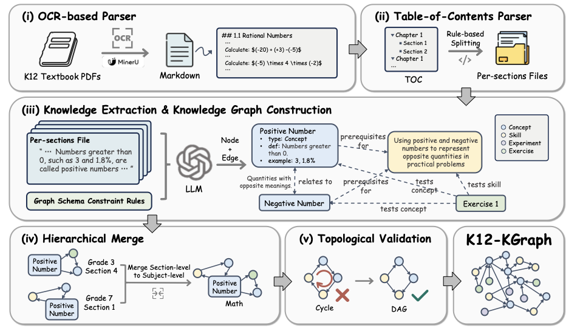
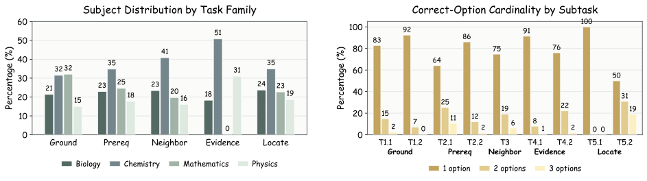
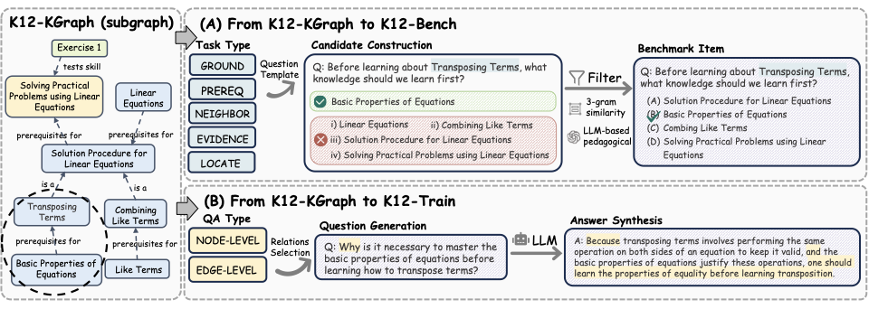

Large language models have strong factual recall but often fail on curriculum cognition: which concepts come first, which skills a problem tests, and where a topic sits in the textbook hierarchy. K12-KGraph is a three-part resource that grounds evaluation and training in structured textbook knowledge.

A curriculum-aligned KG over four subjects, distilled from the official PEP textbook corpus.
23,640 multi-select questions that isolate five dimensions of curriculum cognition.
2,267 compact, KG-guided QA pairs designed to teach curriculum-aware reasoning.
Each K12-Bench question is derived deterministically from a K12-KGraph subgraph, which keeps answer keys auditable and makes the benchmark difficulty controllable by subject, grade, and task family.
The benchmark is balanced across four subjects and five task families, giving a compact yet rigorous probe of curriculum cognition in LLMs.


Graph, benchmark, and training splits in one repo.
Open datasetConstruction pipeline, evaluation scripts, training recipes.
View code
Dataset: CC BY-NC-SA 4.0
Code: MIT
A preprint will be released on arXiv. In the meantime, please cite the technical report below.
@techreport{liang2026k12kgraph,
title = {K12-KGraph: A Curriculum-Aligned Knowledge Graph for
Benchmarking and Training Educational LLMs},
author = {Liang, Hao},
year = {2026},
institution = {Peking University},
url = {https://github.com/haolpku/K12-Dataset}
}